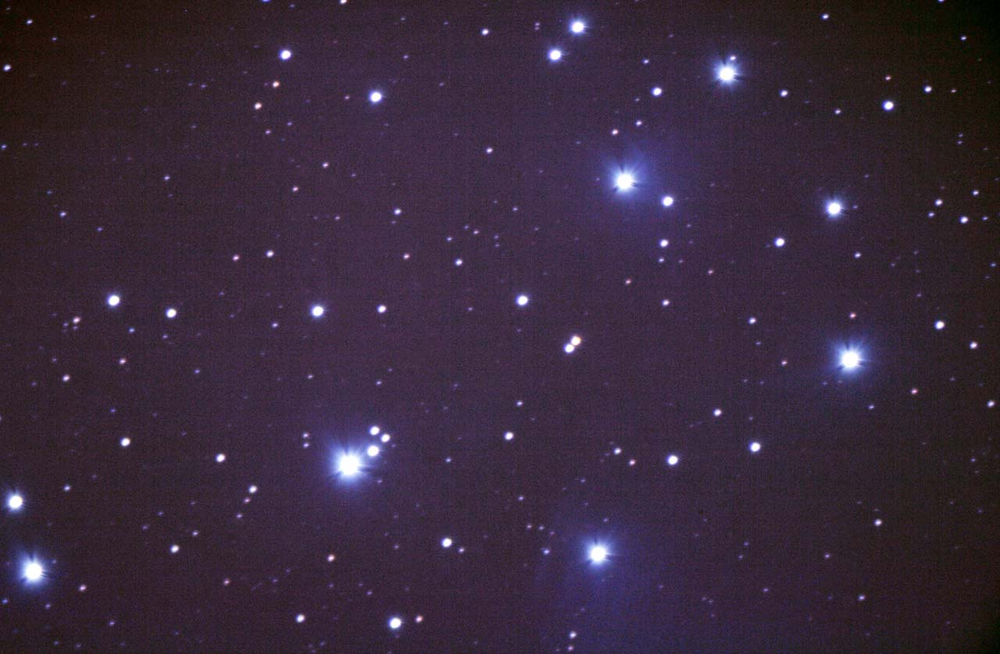

This is a high resolution image of the Pleiades Open Cluster with faint nebula. This is a single exposure of 900 sec (15 min). A Canon Rebel XTi at ISO 100 with a Celestron 80mm refractor was used. It was mounted and tracked on a
Meade 12" LX200 using a Meade DSI ProII for autoguiding. Notice the faint blue nebulosity visible only with long exposures.
